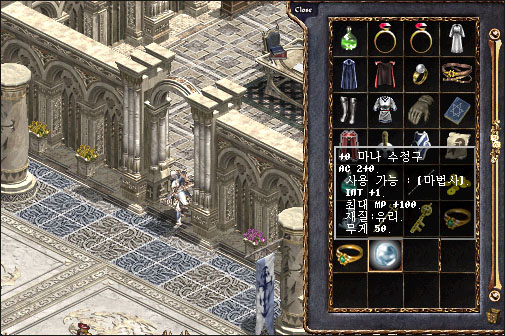
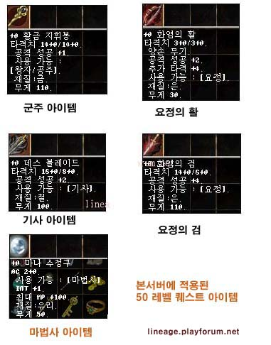

|
2003年6月6日
韓國正式伺服器50級任務一些改變
來源：Lineage Playforum
有關正式的詳細流程有待Lineage Compendium的準確翻譯。
1. 在進入古代的空間後，在一樓要打倒古代人的亡靈方可獲得水精靈之弓所用的古代人之箭。
2. 在古代的空間二樓會出現像四色一樣的憤怒的古代人亡靈。
3. 在二樓找到古代人後，便可以傳送往炎魔的棲生地，在那裡要用水精靈之弓及天上之劍打怪才可以獲得各職業的鑰匙。
4. 法師的獎勵瑪那水晶球由3防改為為2防，但有智力+1及魔力上限+100的額外效果。
（有關正式的詳細流程有待Lineage Compendium的準確翻譯。）

以下為正式50級任務獎勵道具的資料：

王族50級獎勵：
黃金賜杖(Gold Scepter)
攻擊力：14/14
單手武器
攻擊成功 +1
可使用職業：王族
材質：金
重量：110
安定值：6
騎士50級獎勵：
死亡之刃(Death Blade)
攻擊力：16/8
單手武器
攻擊成功 +2
可使用職業：騎士
材質：金屬
重量：100
安定值：6
妖精50級獎勵（二選一）：
火焰之弓(Flame Bow)
攻擊力：3/3
雙手武器
攻擊成功 +2
額外傷害點數 +4
可使用職業：妖精
材質：銀
重量：30
安定值：6
火焰之劍(Flame Sword)
攻擊力：14/6
單手武器
攻擊成功 +4
可使用職業：妖精
材質：銀
重量：110
安定值：6
法師50級獎勵：
瑪那水晶球(Mana Crystal Ball)
防禦力：2
盾牌
可使用職業：法師
智力 +1
魔力上限 +100
材質：玻璃
重量：50
安定值：4 |